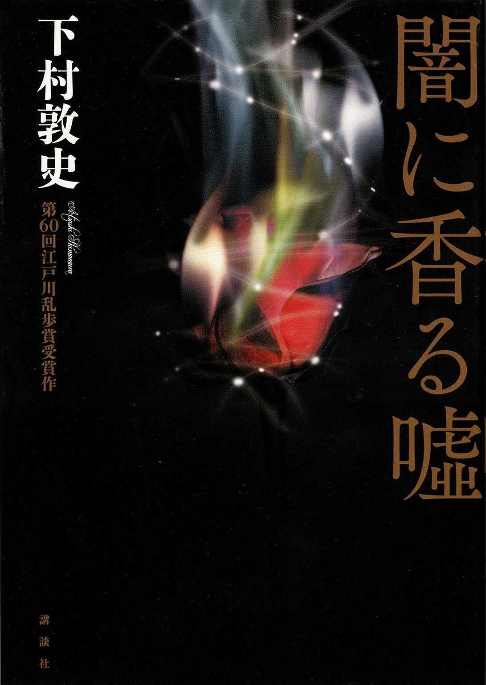
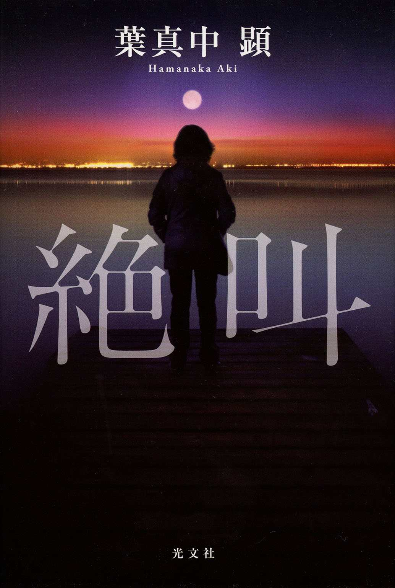
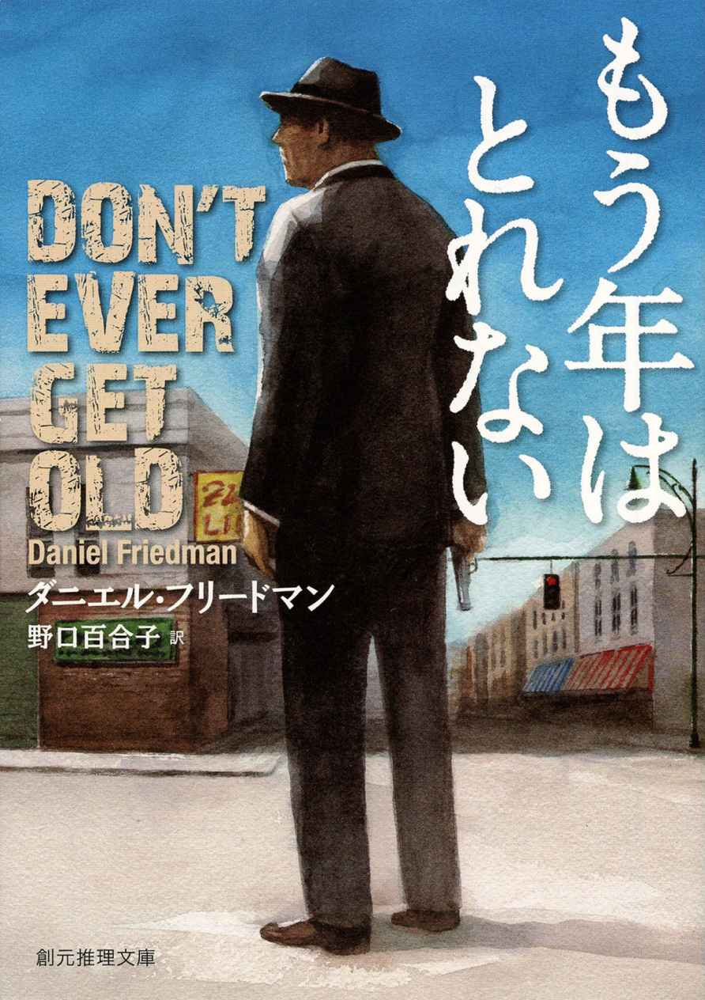

| 週刊文春ミステリーベスト10 2014【文春e-Books】 | |
| Unknown | |
＊ 読む際のご注意、お断り等については こちら をお読み下さい。
海外部門第１位 著者に聞く ピエール・ルメートル『その女アレックス』
タイトルをクリックするとその文章が表示されます。
※本コンテンツは週刊文春２０１４年12 月11 日号に掲載された記事を再構成したものです。
文春e-Books
週刊文春presents
全国のミステリー通、書店員が選ぶ
週刊文春ミステリーベスト10 ２０１４
今年で38 回目を迎えた「ミステリーベスト10 」。圧倒的支持で国内第一位に輝いたのは気鋭の本領発揮の短編集。海外部門も話題作勢 揃 い。識者の熱いコメントと共にお楽しみください。
アンケートにご回答いただいたのは、日本推理作家協会会員及びミステリー作家、文芸評論家、翻訳家、書店員、各大学ミステリー研究会の皆さんです。
投票の対象は、発行日が２０１３年11 月１日から２０１４年10 月31 日までの国内外のミステリー小説です。１～５位まで選出いただき、１位を５点、以下４～１点として集計しました。国内部門の投票は１９０、海外は１６２でした。
〈謎〉を最大限に活かせる最高の舞台を揃えた短編集
──本作では今年、山本周五郎賞も受賞されていますが、ランキング第一位というご感想はいかがですか？
「読者から票を集めての一位というのは、それだけ広く読んでいただけたということで、嬉しいです。私は若い読者に支えられて作家を続けてこられたと思っているのですが、こういう場で評価していただけたということは、より幅広い年齢層の方が手に取ってくださったのかなと思います」
──これまでも『追想五断章』で五位、『折れた竜骨』で二位と注目を集め、今回は満を持しての感があります。
「いつも割と奔放に書きたいことを書いているので、よく受け入れてくださるなと思うのですが（笑）。ただ、〝米澤が書く小説〟の、いわば芯のようなものは、どれも外していないはずです。私は普段から、書きたいトリックとそれを活かすための舞台を、別々に用意して書き出すことが多いんです。『満願』は六編どれもトリック、ミステリーとしての構想ありきでそこから逆算して話を作りましたが、〈 〉を十全に書こうとすると自然に小説が立ち上がってくる、その感覚が強くありました」
──各話の舞台や登場人物の多彩さに目を瞠ります。
「一つ一つのミステリーを一番活かせる舞台を選択した結果、ばらばらになりました。例えば「夜警」のアイデアを思いついた時、最初は時代劇で書こうかなと思ったんです。主君から刀を拝領して......というような。結局はもっと適した状況を考えて、警察官に支給される拳銃が出てきました。四話目「万灯」を書いた時は、なぜこんなにバングラデシュの資料を読み込んでいるんだろう、面倒な舞台を選んでしまった、と思ったり（笑）」
──先人への敬意を感じるとの声も多くありました。
「泡坂妻夫さんの『煙の殺意』、連城三紀彦さんの『戻り川心中』など、私の本棚で特別な位置を占めるミステリー短編集がいくつもあります。きら星のような短編集って、長編大作ともまた違う、格別の印象を残すものですよね。この『満願』という本が、もしも誰かの本棚の中でそういう特別な一冊になってくれたら、面映ゆいけれど嬉しいです」
──次はどんな一冊を予定されているのでしょうか。
「来年、まずは『王とサーカス』という、『さよなら妖精』の十年後を舞台にした長編を予定しています。各出版社で書きためている短編もあるので、連作短編集もまた遠からず出せればと思います」
よねざわほのぶ／１９７８年岐阜県生まれ。２０１１年『折れた竜骨』で日本推理作家協会賞受賞。本作で山本周五郎賞受賞。編者を務めたアンソロジー『世界堂書店』も好評。
１『満願』
多彩にして隙のない、ミステリーの王道をゆく著者ならではの短篇集
市内に住む女性から夫が暴れているという通報を受け、現場に向かった緑１交番の巡査・川藤浩志は、短刀を持って暴れる相手に拳銃を発射、相討ちで死んだ。適正な拳銃使用だったことを認められ、川藤は死後に二階級特進する。交番長の柳岡は、川藤が緑１交番に配属されてからの日々を、そして彼が死んだ日の朝からおかしな出来事が続いていたことを思い出していた。（「夜警」）
私が弁護士として独立して初めて取り扱った殺人事件の裁判の被告人・鵜川妙子が出所した。私は学生時代、彼女とその夫の家の二階に下宿をしていたことがある。卒業後、彼女が人を殺したと知った私は弁護を買って出たのだが、彼女が控訴を取り下げたため懲役八年の判決が確定したのだった。私が りついた彼女の真意とは？（表題作）
事件の表向きの決着と、その裏に隠された真実との恐るべき落差。意外性たっぷりの六つの短 を収録した、実力派の本領発揮の一冊。
ここが魅力！
福井健太 「青春ミステリや異世界本格で知られる著者が、横山秀夫や連城三紀彦を彷彿させる心理劇を紡いだ珠玉集」
臼井二郎 「先人への敬意にみちた、切れ味するどい傑作推理短編集。一編一編、いずれも趣向をこらしながらよく練り込まれていて、本書にかけた作者の気魄を感じます」
黒田研二 「こんなにも背すじが冷たくなるのは、これがただのフィクションだと思えなくなってくるから。イヤミスという言葉だけでは片付けられない、なんとも不快な傑作」
村上貴史 「人の心の闇の濃淡を、人の心の闇の多様さを体感させてくれる作品集。観察力、表現力、想像力。いずれも一級品である」
似鳥鶏 「近年、文体の使い分けに挑戦している米澤穂信の、一つの到達点ではないか」
佐藤憲一（読売新聞） 「人間心理の暗部を見透かすことに長けた若手の才能を示す短編集。それぞれの仕掛けがうまくはまっているのも好ましい」
２『闇に香る 噓 』

盲目の語り手というハードルを難なく超え、重厚なテーマに挑んだ力作
村上和久は現在六十九歳。終戦の翌年に満州から帰国したが、当時の栄養失調が原因で、四十一歳の時に失明している。彼は週三回の人工透析を受けている孫娘の夏帆に、自分の腎臓を移植しようとするが、腎臓の数値が悪く移植に適していないことが判明した。他に頼りになるのは兄の竜彦だけ。和久は竜彦に腎移植のドナーになることを頼んだが、移植どころか検査さえ頑なに拒絶される。竜彦の態度を不審に思った和久は、中国残留孤児だった竜彦が帰国した際、既に失明していた自分が彼の顔を確認していないことに気づいた。今まで兄だと思っていた男はまさか偽者なのか？ 夏帆のドナーになれるのは本物の兄だけだ......和久は愛する孫のためにも、〝兄〟が本物かどうかを突きとめようとする。
全盲の主人公の視点で描かれる また の物語。今年で六十回を迎えた江戸川乱歩賞の歴史では珍しく、全選考委員に称賛されたハイレベルなミステリー。
ここが魅力！
鈴木輝一郎 「これからミステリを書こうという人は必読。九回目の応募で乱歩賞、というだけに努力の跡がよくわかり、構成や面白さの要素を理解しやすく、学ぶところが多い」
海老沢類（産経新聞） 「ミステリーの様式美と普遍的な人間の情愛、中国残留孤児問題などが絶妙に絡み合う。読者を引き込む筆力に将来性を感じた」
未須本有生 「視覚障害の不自由や不条理が波状に伝わる。また中国残留孤児や臓器移植という骨太なテーマと、 解きが正しくリンクしている」
真中耕平 「盲目頑迷な主人公に感情移入しづらいマイナスを、伏線回収の妙味と世界の反転により暖かみで帳消しに」
野波健祐（朝日新聞） 「近年の乱歩賞で最大の収穫。全盲の主人公だけでも高いハードルなのに、背景に移民問題などを取り込んでおり、着地できるのかと思っていたが、伏線の回収ぶりは納得がいった。過去の落選作も読んでみたい」
３『さよなら神様』
全知全能の〝神様〟と少年探偵団によるダークな倒叙ミステリー
〈「犯人は上林護だよ」俺、桑町淳の前で神様は宣 った。〉
〝神様〟というのは、小学五年生である俺のクラスメイト、鈴木太郎のことだ。二学期に引っ越してきた彼は、背が高く男前で、頭が良くスポーツ万能。そんな彼は、クラスで起きたリコーダー盗難事件の犯人の名をぴたりと当て、更に、トラック事故を未然に防いでみせたのだ。以来、五年生のあいだで彼は神様ということになった。
一週間前、隣の小学校の体育教師が刺殺され、俺たちのクラスの担任である美旗先生が容疑者となった。もし鈴木が本当に神様なら犯人の名前を知っているだろう......そう考えた俺は彼に誰が犯人か ねたところ、返ってきたのが冒頭の答えだ。上林護とは、同じクラスの上林泰二の父親だというのだが......。（「少年探偵団と神様」）
一行目から真犯人の名前が明かされるという衝撃的な構成。全知全能の神様探偵・鈴木太郎が登場する六 の本格ミステリーを収録。
ここが魅力！
日下三蔵 「何でもお見通しの神様を出しておいて、それでも意外性のあるミステリを成立させてしまう作者の豪腕ぶりにしびれる」
卯月鮎 「ミステリー史上最短で犯人がわかる連作短編集。少年探偵団ものながら温かみの欠片もない、シュールで殺伐とした空気に戦慄する」
関西学院大学ミステリ研究会 「ミステリの構造に着目し、新たな作品を生み出しては読者を驚かす麻耶雄嵩。本書も最後に伏線が回収され、読者に強い衝撃を与える。著者の一連の作品は、悪魔にも思えるほどの魅力がある」
戸松淳矩 「いきなり真犯人が明かされる破天荒な、しかし本格スピリッツに満ちた傑作」
慶應義塾推理小説同好会 「犯人の名前を最初に明かすという構成もさることながら、文章全体を覆うこの不条理こそが著者の魅力なのではないかと思う。いかにも麻耶雄嵩である、と言うべき一冊」
輪渡颯介 「神様は全知全能。それゆえの見事なラスト」
４『小さな異邦人』
高校のクラスでいじめを受けている縞木乃里子は、郵便受けにあった封筒が自分宛てのものと勘違いして開封したが、便箋に記されていた宛名は母の千津だった。娘からその手紙を渡された千津は、自分の両親が三十二年前に起こした無理心中事件のことを思い返す。（「白雨」）
柳沢家は母親と子供八人の母子家庭である。中学生の長女・一代は亡父の死んだ前妻の子であり、高校生の秋彦は今の母の連れ子。その後に六人の弟妹が次々と生まれたのだ。この大家族のもとに、子供の命を預かったので三千万円を用意しろという電話がかかってきた。しかし、八人の子供は誰も誘拐されてなどいない。では誰が誘拐されたのか？（表題作）
二〇一三年、惜しまれつつこの世を去ったミステリーの鬼才の、単行本未収録作品を集成した珠玉の短 集。著者最後の短 となった表題作を含む八 を収録。
ここが魅力！
池上冬樹 「あらためて技巧の高さを見せつける傑作短編集」
鳥飼否宇 「これだけ粒のそろった短編集がこれまで刊行されずに残っていたことが驚きです。読めてよかった。ミステリーの可能性を広げた天才的な著者の早すぎる死が惜しまれてなりません」
小池啓介 「唯一無二の奇才が残した異次元の傑作の数々に終始めまいをおぼえながら読んだ」
三島政幸（啓文社コア福山西店） 「昨年亡くなった連城さんが最晩年でまだこんなにレベルの高い短編群を発表していただけでも驚き。とりわけ表題作は、日本ミステリの歴史に残る誘拐ものの大傑作だと思う」
立命館大学ミステリー研究会 「生涯最後の短編である表題作が希望に閉じる。それはまさしく〝最後の贈り物〟にふさわしい」
５『虚ろな十字架』
動物専門の葬儀を行う会社に勤務する中原道正は、警視庁捜査一課の佐山刑事から、元妻の小夜子が殺害されたことを告げられた。自宅近くの路上で刺殺されたという。十一年前、中原と小夜子の一人娘・愛美が自宅で殺害され、蛭川という男が犯人として逮捕された。中原と小夜子は裁判で蛭川に死刑判決が下ることを望み、二審で死刑が確定する。その後二人は離婚し、顔を合わせることはなかった。小夜子殺害の数日後、犯人として町村作造という老人が出頭してきた。金銭目当ての犯行だと供述しているという。中原は佐山から町村の顔写真を見せられたが、見た覚えのない顔である。だが、本当に金銭目当てだったのか。中原は離婚後の小夜子がどのように過ごしていたのかを知ろうとする。
被害者と加害者、それぞれの家族の苦悶を通して、殺人という罪はいかにして償われるべきかを問う力作。
ここが魅力！
川野京輔 「せつない、やるせない。答えのない重たいテーマを扱いながら、一気読みさせるテクニックはさすが」
高津祐典（朝日新聞） 「現実の事件を安易に借りず、死刑制度という司法のあり方に一石を投じた。ベテランの凄みを感じる。東野圭吾好きで何が悪い！（笑）」
村山実 「いつもの東野作品ほど気軽には読めないが、エンディングで救われる。すっきりした読後感がいい」
竹内明 「死刑と遺族感情、贖罪という重いテーマに真っ向から挑んでいる。著者から正解なき問題を突き付けられたまま、ストーリーに引き込まれ、一気に読み終えた。この余韻、単なるミステリーではない」
疋田直己（平坂書房モアーズ店） 「ミステリーファンにとっては当たり前すぎるチョイスだが、やはり内容は秀逸」
６『絶叫』

二〇一四年三月、東京・国分寺のマンションで孤独死と見られる女性の遺体が発見される。国分寺署の奥貫綾乃は死因を確かめるべく部屋の住人鈴木陽子の調査を始める。
陽子は海沿いの街、Ｑ県三美市に生まれ育ったが、母親は彼女をネグレクト、弟の純を溺愛した。だが純は中学生のとき急死、冷たい家族関係が続くが、さらに彼女が二十六歳のとき、父親が多額の借金を抱えて失踪。家を奪われ、母はひとり実家を頼り、一家は離散することに。
そんな陽子の前に、中学校時代の憧れの先輩が現れ、二人は結ばれる。漫画家の卵だった彼について上京するが、子供に恵まれず、結婚は二年で破綻。再び孤独な生活が始まる。彼女は保険の外務員に就き、活路を見出したかに思われたが......。
ヒロインの転落悲劇を多彩な語り口で描きつつ、その 深い軌跡を通して現代社会の闇をえぐり出した、社会派タッチの本格ミステリー。
ここが魅力！
松本大介（さわや書店フェザン店） 「胃が重くなる。バリバリの社会派の登場に意識の高いお客様の反応もすこぶる良い」
石川真介 「不幸な女、はミステリーの定番。社会の底辺にある様々なテーマを織り込んで、なおかつ推理小説の仕掛けを工夫した作者の成長」
成川真（ブックポート２０３） 「堕ちて堕ちて堕ちる。最後のシーンで絶叫していたのは主人公ではなく、自分だった」
佐伯敦子（有隣堂伊勢佐木町本店） 「強烈でした。三面記事の向う側まで読んでいるようで、吐き気はするけど止められませんでした」
児玉憲宗（啓文社） 「現代の社会問題が凝縮された物語。それに翻弄されるのが、ごく普通の女性であることに驚き、胸を締めつけられた」
７『後妻業』
中瀬耕造は九十一歳にして結婚紹介所で出会った六十九歳の小夜子と再婚するが、脳梗塞で倒れて入院。実はそれは、小夜子が血液抗凝固剤と胃薬を取り替えたせいだった。
小夜子は結婚紹介所の所長柏木と組んで、遺産目当てに耕造と再婚したのだ。彼女は葬儀の算段を始めるが、二人の娘尚子と朋美はそんな義母を信用していなかった。しかし小夜子は柏木も舌を巻くほどのプロ、娘たちの反発などものともしない。柏木たちは鍵師を雇って耕造の金庫を開け、不動産の権利証書や預金通帳を手に入れると定期預金を解約、大金をせしめる。
柏木と小夜子はさらに耕造を亡き者にして遺産を相続しにかかる。娘たちも知り合いの弁護士・守屋を立てて対抗。守屋は小夜子が〝後妻業〟であることを見抜くが......。
軽快な語り、圧倒的リアリティ、真っ黒な人物造形が光る、著者十八番の犯罪小説。
ここが魅力！
佳多山大地 「悪党どものサバイバル戦に突入する終盤は圧巻」
西上心太 「鬼畜ババアと悪徳結婚相談所所長の造型がすばらしい」
松田哲夫 「テンポのいい語り口に乗って読み進むと、悪党どもの仲間になったような気分。悪の実感をもたずに犯行を重ねる彼らの感覚は、軽く明るいものなのかもしれない」
内田俊明（八重洲ブックセンター八重洲本店） 「悪意と欲望が入り乱れる設定、展開なのに嫌な印象を受けない。黒川博行の巧さが存分に光った最高傑作。直木賞受賞後第一作が、受賞作に迫る勢いで売れたのも近年にない」
新城カズマ 「すでに評価は固まってますが、しかし入れずにはいられない」
８『怒り』
東京の八王子郊外で夫婦が殺害され、現場には被害者の血で「怒」という文字が記されていた。犯人の山神一也が逃走してから、間もなく一年が経とうとしている。
房総の漁師・槙洋平のもとに、家出して東京の風俗店で働いていた娘の愛子が戻ってきた。洋平は、最近漁協で働くようになった田代哲也という青年と愛子の仲を気にするようになる。一方、母親が余命三カ月と宣告されたゲイの会社員・藤田優馬は、サウナで知り合った大西直人という青年と同棲を始めた。そして沖縄の波留間島で母親と暮らし始めた高校生の小宮山泉は、無人島で田中と名乗る青年と出会う。田中は自分がここにいることを誰にも言わないように泉に頼んだ。
それぞれ前歴が不詳な三人の青年のうちの誰かが、整形手術で顔を変えた山神なのか。現実に起こった事件をヒントに、信頼と疑念が交錯する現代社会を描いた大作。
ここが魅力！
難波弘之 「ミステリの手法を最大限に活用した文学。社会派ながら、読後感が重くないのは、作者の優しい眼差に依る」
三浦天紗子 「現実の犯罪を彷彿させる題材を作家の想像で肉付けするとき、難しいのが落としどころだが、余韻と納得度のバランスにおいて、吉田修一は群を抜いている」
別所信啓（別所書店） 「三人の の男。誰もが怪しく最後までどっぷり小説世界にはまります」
朝山実 「映像化は絶対不可能。小説でしか達成できない、極上の人間ミステリーだ」
郷原宏 「人はどこまで人を信じられるかという『信』の極限を描いてみせた」
９『オービタル・クラウド』
地上数百キロの衛星軌道を周回するロケットや人工衛星の残骸──宇宙ゴミ 。二〇二〇年十二月、イランのロケットのデブリに不審な動きが観測された。北米航空宇宙防衛軍が調査に乗り出すが、程なくネットで国際宇宙ステーションを狙った軌道兵器ではないかという が流れ出す。
そんな中、宇宙ステーションに鉄 を下すという声明が北朝鮮から出るが、日本のＪＡＸＡ宇宙航空研究開発機構は誤訳まじりのブラフと軽視していた。だが流れ星の発生を予測する日本のＷＥＢサービス〈メテオ・ニュース〉の面々は雲のような軌道上物体を発見。やがてイランの研究者から、新発明の宇宙機であることが知らされるが、その頃ＪＡＸＡの元職員が絡む、ある陰謀が進められていた。
近未来の電子技術を駆使したスペース・テロの脅威を描く迫真のＳＦサスペンス。
ここが魅力！
大森望 「世界水準の超大型冒険小説。ハリウッド映画化希望」
北原尚彦 「ＳＦ作家としてデビューした作者だが、ミステリ読者も要チェック。マイクル・クライトンの再来の感」
樺山三英 「ちょっと先の未来の、わずかに進んだ技術。それだけの材料で、ハリウッドばりの大風呂敷を広げてしまう手腕に驚く。背後にはテクノロジーへの信頼と愛が」
古山裕樹 「冒険小説・スパイ小説としての読みどころもたっぷり。没頭できる作品」
葉山響 「恐るべき謀略小説だが、読み終えて胸に残るのは爽やかな希望だ。新時代への扉を開く清新な傑作だと思う」
９『機龍警察 未亡旅団』
大量破壊兵器が衰退し、代わりに機甲兵装と呼ばれる有人搭乗兵器が台頭した〝至近未来〟。神奈川県相模原市で、密売品受け渡しの最中に逮捕された不法入国者の女たちが自爆テロを起こし、六人が逃亡した。チェチェン紛争で家族を失った女だけのテロ組織「黒い未亡人」が日本に潜入したのだ。機甲兵装の搭乗要員である三人の傭兵を擁する警視庁特捜部は、公安部と共同で捜査に参加することになった。その特捜部の捜査班主任・由 起 谷 志郎は、六本木で半グレ集団をあっさり倒してみせた少女と邂逅していた。彼女は逃亡したテロリストなのだろうか。一方、特捜部の理事官・城木貴彦は、実兄の衆議院議員にある疑惑を抱きはじめる。
警察小説・ハードボイルド・ＳＦを融合させた人気シリーズの第四弾。特捜部の前に最強の敵が立ちはだかる。
ここが魅力！
山岸真 「ご当地ものとして新潟の書店はプッシュするべき」
千街晶之 「シリーズ中で最もハードなバトルが展開される、超重量級のＳＦ警察小説」
牧眞司 「シリーズ最新作にして、主人公たちは最大の危機に直面する。感情移入できる敵役の造型が素晴らしい」
浅ノ宮 「濃密な大人の冒険小説。詩情あふれる戦闘シーンが素晴らしいです！」
朝加昌良（紀伊國屋書店ゆめタウン徳島店） 「このシリーズはもっともっと多くの人に知られてもよい」
小西昌幸 「民族問題に誠実に向きあっていてすがすがしい」
こちらもぜひ（国内編）
『異次元の館の殺人』 芦 辺拓 「この作者ならではの、〝ＳＦ＋本格ミステリ〟のハイブリッド」（太田忠司）
『貘の檻』道尾秀介 「この作家が、横溝正史風の設定で正統的なミステリに挑んでくれるとは！ 嬉しい驚きであったし、完成度もすこぶる高い」（酒井貞道）
『掟上今日子の備忘録』西尾維新 「ヒットメーカーが挑む変格探偵小説。眠ると記憶が消えるというキャラ設定は異形だが、記録／記憶にまつわるミステリーの切れ味は鋭い」（吉田大助）
『東京自叙伝』奥泉光 「日本の近現代史をこのようなものにしてしまった犯人を、大胆な手法で描き出した怪作」（円堂都司昭）
『パレートの誤算』柚月裕子 「生活保護に関する綿密な取材が知識欲を満たし、練られた構成で読者を飽きさせない」（垣谷美雨）
『盲目的な恋と友情』 辻 村深月 「女性の奥にある感情を著者らしく濃密に描いている。屈辱感、劣等感が殺人にまで発展する展開にうなった」（中江有里）
『忘れ物が届きます』大崎梢 「やわらかい装幀と優しい筆致に酔っていたら、一編目の物語で背筋が伸びました」（水生大海）
昨年の『教場』に続き、二年連続で短 集が一位となった。『満願』は米澤穂信の山本周五郎賞受賞作。帯の惹句では未だに「期待の若手」扱いだが、仕上がりは老巧ですらある。連城三紀彦など既成作家からの影響がやや強く感じられるけれど、模倣芸もここまで洗練されていれば高く評価されて当然だろう。
その連城の短 集『小さな異邦人』は四位。単行本未収録作品を集成したものだが、出来は粒揃いであり、改めて逝去が惜しまれる。遺作長 『女王』は十五位。
順位が前後したが、二位の下村敦史『闇に香る噓』は、江戸川乱歩賞六十年の歴史に残るであろう傑作。オーソドックスな作りのこの作品に対し、三位の麻耶雄嵩『さよなら神様』は、いかにもこの著者らしいひねりの利いた趣向の本格ミステリー連作。
東野圭吾、黒川博行といったヴェテランが貫禄を示した一方、それぞれ長 二作目の葉真中顕 、藤井太洋といった新人も負けじと気を吐いた。昨年の中村文則に続き、吉田修一のような純文学とエンタテインメントの境界線を超えて活躍する作家に注目が集まっている。『機龍警察 未亡旅団』で九位にランクインした月村了衛は、今年発表したもう一作の長 『土 漠 の花』も連城の『女王』と並んで十五位となっており、その実力と評価は揺るぎない。
十一位以下では、早坂吝 のデビュー作『○○○○○○○○殺人事件』が十七位になったのが注目される。メフィスト賞の記念すべき第五十回受賞作に相応しい怪（快）作である。
まず何よりもこのような賞をいただき、喜びに堪えません。ミステリ評論家はもちろん、より広い分野の方々の評価をいただけたことを誇らしく思います。
『その女アレックス』では普段やらないことに挑みました。ミステリの場合、被害者や容疑者といった登場人物に、正または負の識別を与えて読んでいくことが大きな楽しみとなります。そこでふと、ある人物に強い正の識別を感じていたのに、思いがけない展開によってそれが百八十度転換して負の識別に変わるという小説は書けるだろうかと考えました。あるいはもっと欲を出して、さらに第二の転換が待ち受けているというのはどうだろうかと。つまり抽象的な構造を先に考え、そこからスタートすることを試みたのです。
今、喜びとともに改めて日本に思いを馳せています。私にとって日本とは、何と言いましょうか......一つの神話のような存在なのです。私はフランス文学と同じくらい日本文学──清少納言、夏目漱石、川端康成、松本清張、小川洋子などを愛読してきました。日本のファンのみなさん、これからもどうぞよろしく。お目にかかれる機会があれば光栄ですし、そう、そのためにも、「私の作品を読んで、どんどん薦めてください。私が日本に行けるように！」と頼みたいくらいです。
１９５１年パリ出身。２００６年 Travail soigné でデビュー。13 年Au revoir là-haut でゴンクール賞受賞。
１『その女アレックス』
印象的な登場人物たちに導かれ、衝撃のラストまで一気読み間違いなし
非常勤の看護師アレックスにとって恋愛はすでに人生で関心の対象ではなかった。だから男に見つめられても無視して、レストランから自宅に帰って来たのだが、そこで何者かにバンの中に引きずり込まれ、拉致される。男は、お前が死ぬのを見たいといって監禁し痛めつけていく。
誘拐事件を追及するのはパリ警察の四人の刑事たちだった。小男（身長一四五センチ）のカミーユ警部を中心に、部下で金持ちのルイ、倹約家のアルマン、そしてカミーユの上司で巨漢（推定体重一三〇キロ）のル・グエン犯罪捜査部部長だ。女性の行方を探すものの見つけられない。
そのころ囚われのアレックスは、死を目前に脱出をはかろうとするのだが......。
「あなたの予想はすべて裏切られる！」（帯）こと間違いなしの驚きのサスペンス。英国推理作家協会賞インターナショナル・ダガー賞受賞。
ここが魅力！
中山七里 「ネタバレは勿論、あらすじの説明も憚られる。読者としては歓喜、作家としては切歯扼腕。とにかく読め！」
東野さやか 「読みながら何度も『ええっ！』と声が漏れた。緻密な構成もさることながら、捜査する刑事のキャラクターも素晴らしかった」
矢口誠 「凡庸なサイコ系監禁サスペンスとは全く違う。驚愕の展開が随所にあり、相当なミステリマニアでもこの作品は先が読めないはず」
二松学舎大学推理小説研究会 「物語が転がる度に読者は焦らされるが、展開の巧みさが読む気力の喪失を許さない。圧倒的なパワーを持つ作品」
藤井美樹（紀伊國屋書店広島店） 「疾走感に脱帽。刑事側と犯人側から披露される真実にガツンとやられる」
小山正 「ヴァイオレンスな展開の中に、いかにもフランスミステリらしいエスプリが光る犯罪小説の傑作」
２『秘密』
戦時下のロンドンからやがて起こる悲劇へ......娘は母の過去を追う
一九六一年夏、十六歳のローレル・ニコルソンはイギリス・サフォークの家で妹たちと遊んでいた。そんなとき、ひとりの男性客が訪れ、母ドロシーに「やあ、ドロシー、久しぶりだね」と語りかけるが、母は突然ナイフで男を刺殺。ローレルは彼が倒れる姿を見て失神してしまう。
二〇一一年、国民的女優となったローレルは入院中の 死の母を見舞い、古いアルバムに挟まっていた写真を見つける。そこには一九四一年の若い母と女友達が写っていた。
その後ローレルたち姉妹はサフォークの家に集う。一九六一年の事件は、ローレル自ら事実とは異なる証言をして事なきを得た。だが娘たちは母のすべてを知っているわけではなかった。写真の女友達の事も。ローレルはやがて母の過去を探り始めるが......。
名作『忘れられた花園』で知られるオーストラリアの実力派作家の家族ミステリー。
ここが魅力！
石井千湖 「『人生の語られない部分』を巡る物語。女の子のキラキラした場面と、後の悲劇とのコントラストが効果的」
折原一 「ゴシック系小説が好きな人にお薦めだが、物語に酔っていると思いがけない展開に足もとを掬われる。結末はスケールが大きく感動的」
倉田裕子（有隣堂店売事業部） 「過去と現在を行き来し、パズルのピースが揃っていく構成は読者を飽きさせない。緻密なストーリーで読後感も良い一冊」
緒川怜 「戦時下のロンドンの空気がよく伝わってくる。かなり筆力がないと書けない作品だが、易々と達成している」
筑波大学推理小説研究会 「人物の思惑を詳細に記し、死に するまで隠し続けた母の〝秘密〟を見事に描いた。分厚さに怯まず是非読んでほしい」
温水ゆかり 「ついに化けたケイト・モートン。語り口、時代考証、そして鮮やかなどんでん返し、文句なしの名作」
３『ゴーストマン 時限紙幣』
クールでスピーディ。若き天才による鮮烈なクライムノベル
二人の犯罪者が現金輸送車を襲うものの、一人は現場で死亡、もう一人はかろうじて逃走する。盗んだのは百二十万ドルの紙幣。しかしその紙幣には四十八時間後に炸裂する爆薬が仕込まれていた。盗んではいけない金だった。
犯罪の始末人「ゴーストマン」の「私」は、強盗犯を追い、四十八時間以内に金を奪回する仕事を依頼される。依頼主はマーカスで、彼には借りがあり断れなかった。五年前にマーカスが計画した銀行襲撃事件が失敗したのは「私」の責任だったからだ。
こうして「私」が強盗犯を追う現在と、五年前の襲撃事件を物語る過去が並行していく。いったい二つの大仕事はどんな顚末を迎えるのか。
犯罪の痕跡を消し、犯人を消し、自分自身をも消す「ゴーストマン」の苛烈な姿を捉えた二十五歳の天才のデビュー作。英国推理作家協会賞イアン・フレミング賞受賞。
ここが魅力
狩野洋一 「英米で人気の高い二十代半ばの天才作家。犯罪の事後処理をする主人公に読者の期待と驚きが重なる」
中山英（萬松堂古町本店） 「書き尽くされた銀行強盗ものが最新バージョンに。資本主義の崩壊は大金を盗む話をファンタジーにしてしまうのだ」
古屋美登里 「女性が添え物でなく、とってつけたようなロマンスがないのがグッド」
大倉崇裕 「危機に直面しても慌てず冷静沈着、そして一切のためらいもなく殺す。最近では珍しい徹底的にクールな主人公の活躍に胸が躍った」
狩井善人 「まるでジェットコースターのような展開に酔わされる。乗り物酔いとは違います（笑）」
宇田川拓也（ときわ書房本店） 「『こんなカッコイイ物語を待っていた！』と拍手喝采。若き作家のデビュー作だが、老練と形容したくなるような芳醇なクライムノベル」
４『ハリー・クバート事件』

マーカス・ゴールドマンは二十六歳のとき一躍ベストセラー作家として躍り出るが、次作が書けないままその後の二年間を無駄にしていた。
二〇〇八年二月、窮したマーカスは大学時代の恩師である大作家ハリー・クバートを頼って、田舎町オーロラに赴く。彼はハリーの家に滞在中、十五歳の少女ノラの手紙を発見するが、彼女は三十三年前のハリーの恋の相手だった。
マーカスは結局何も書けぬままニューヨークに戻るが、やがてハリーの家の庭でノラの白骨が掘り出され、ハリーは逮捕される。彼の名作『悪の起源』の原稿も遺体と一緒に発見され、作品は体験談だとして評価もガタ落ち。マーカスはオーロラで事件の真相を調べ始めるが、小さな町には様々な秘密が潜んでいた。
驚愕の逆転技でヨーロッパを席巻した若きスイス作家のフランス語ミステリー。
ここが魅力！
伯方雪日 「初期の島田荘司作品を思わせる、多少の瑕疵はものともせず突っ走る怒濤の展開。本当に翻訳なのか、これ」
平岡敦 「三十三年前に起きた少女殺し事件の真相を追ううちに二転三転を繰り返し、やがて 作行為そのものを巡るミステリへと至る」
穂井田直美 「綿密に練り上げられた構成の下に、読者を存分に幻惑させてくれる。最後までじっくり愉しめる今年一番のミステリらしい作品だ」
大谷大学推理小説研究会 「テンポある文章は寝る時間を忘れて読むことができる。すべてが明かされる結末も、虚しいながらもどこか未来を感じさせるようで爽やかだ」
鈴木恵 「殺された少女はどんな人物だったのか。強烈な に引っ張られて読み終わるまで他の事が手につかなかった。文句なしの名作」
５『もう年はとれない』

元殺人課の刑事バック・シャッツは、臨終間際のジムが会いたがっていると聞いて病院へと駆けつける。ジムとは第二次大戦下のドイツで共に戦った仲だった。だが、ジムの告白に驚く。バックを捕虜収容所で痛めつけたナチス将校ジーグラーを東西ドイツの検問所で見逃したという。金の延べ棒一本もらうかわりに。
バックはジーグラーを許せなかった。たんまりもっていたという金塊も気になった。八十七歳の元刑事は、インターネットが得意の孫のテキーラとともに調査に乗り出す。
３５７マグナムと痛烈な皮肉を武器に、ミステリー史上最高年齢（？）の男が、金塊に群がる者たちに立ち向かうシニア・ノワール。マカヴィティ賞新人賞受賞作。
ここが魅力！
高林さわ 「設定が絶妙。若者は笑うだろうが、老いを感じる者にとっては身につまされる話。物語の展開も鮮やか」
金久保茂樹 「元殺人課の刑事が孫と一緒に捜査に乗り出す様が軽快でウィットに富んでいる。著者のデビュー作なので次回作が楽しみだ」
香納諒一 「クリント・イーストウッドに是非とも映画化してほしいような主人公であり、物語だ」
川出正樹 「元タフガイ老人が死を見つめ、諦念を抱きつつも信念を曲げない姿が、胸に響く。滋味深く爽快な作品」
栗木さつき 「ハードボイルドな上に、ユーモアとペーソスが加わったまさにどんぴしゃりな作品。こんな小説をかねがね読みたいと思っていた」
６『養鶏場の殺人／ 火 口 箱』
一九二〇年の冬、エルシーと四歳年下の青年ノーマンは出会い恋人関係になるが、四年後、ノーマンはエルシー殺害の罪で逮捕される──。英国で実際に起きた事件を下敷きにした「養鶏場の殺人」。
強盗目的で侵入し、老女二人を殺害したとして、アイルランド人青年パトリック・オライアダンが逮捕される。事件の起きた小さな村は騒然となり、パトリックの両親が村民から排斥され、やがてオライアダン家が火災に見舞われる。コミュニティーの偏見をあぶりだす「火口箱」。
『氷の家』『女彫刻家』で知られる現代英国ミステリーの女王ミネット・ウォルターズの傑作中 を二作収録。
ここが魅力！
森谷明子 「『火口箱』が秀逸。平凡な人間の集団が犯罪者の家族に向ける不条理な悪意はどこにでも存在する」
間室道子（代官山蔦屋書店） 「養鶏場で何があったのか、事実を丹念に追ったからこそのラスト五行が、飛び蹴りのように読者に効いてくる」
式田ティエン 「ノンフィクションとフィクションを収録。読みやすさを主眼に書かれたというが、読後感は重い」
島村浩子 「『養鶏場の殺人』は男女で感想を話し合うと怖オモシロイはず。『火口箱』は登場人物が多層的に描かれ、ウォルターズの真骨頂」
若林踏 「現代英国ミステリの女王の作品に親しむための、格好の入門書だ」
７『逃げる幻』
第二次世界大戦が終わって間もなく、アメリカの軍人ダンバーは単独スコットランドに向かう。途中の機内で地元の貴族ネス と知り合い、恵まれた家庭なのに何故か家出を繰り返す少年の相談をもちかけられるが、現地に到着早々、問題の少年ジョニーがまたもや失踪していた。
ジョニーは荒れ地に釣りに出かけ、家庭教師の見ている前で突然消えたという。その夜、ダンバーは滞在先の部屋でジョニーを発見、彼は目に恐怖を浮かべ、今度こそ逃げられると思ったのにという。
歴史深い舞台で起きる消失事件とそれに続く密室殺人の に名探偵ベイジル・ウィリングが挑む本格ミステリー。
ここが魅力！
法月綸太郎 「著者のコスモポリタン的知性と幻想的な文体、諜報スリラー志向が一体となった戦後パズラーの秀作」
倉知淳 「本筋の とは無関係なところから鮮やかなロジックで真相を導き出す技が見事。一九四五年とかなり昔の作品だが、全く古びてない」
霞流一 「風土、歴史背景、ムーディな舞台が怪物じみたギミックに結びついている」
大森滋樹 「この作品の肝は何と言ってもフーダニット。その他の趣向は刺身のツマ。戦後ヨーロッパの暗い主題を扱っており、現代日本でも十分に考えさせられる」
月村了衛 「すでに（と言うより大昔から）安心のブランド、ヘレン・マクロイ。新作が出るたびに、お年玉をもらった気分になる」
７『ピルグリム』１・２・３
サウジアラビアの故郷を逃れた少年は、大胆なテロリストに成長し、暗号名「サラセン」をもつ。アメリカを殲滅すべく悪魔的なテロ計画を練り、準備を進めていく。
その情報をアメリカ政府首脳部が摑み、引退していた伝説の諜報員を呼び戻す。「ピルグリム」の暗号名でサラセンを追跡するが、頭脳明晰のテロリストは容易に尻尾をつかませない。果たして悪魔の計画を阻止できるのか？
世界規模のマンハントを繰り広げる全三巻約千二百頁の大作。『マッドマックス２』ほか多数の映画脚本を手がけた作者のデビュー作。
ここが魅力！
香山二三郎 「イスラムテロリストとアメリカ諜報員の死闘をダイナミックに描いた。国際謀略小説のニューウェーブ」
諏訪部浩一 「叙事詩的なスケールで描かれる最新のスパイ小説。９・11 以後のエンターテインメント小説の範例だ」
早見俊 「登場人物の造形がリアル。天然痘によるテロという設定はエボラ熱が思い浮かび、背筋が寒くなった」
岩井志麻子 「全てが大掛かりで、手間が掛かっている！ これを映画にしたら、どれだけ金がかかるのだろうか」
天羽沙夜 「今年度最高の収穫でした。千二百ページをまとめ上げる力には言葉もない」
９『ジャック・リッチーのあの手この手』
銀行強盗事件の裏で駆け引きが始まる「隠しカメラは知っていた」、薬を飲ませたがる妻と飲みたがらない夫の顚末「味を隠せ」、食料品店の店主が強盗と対峙する意外な結末「最初の客」などリッチーらしいひねりのきいたクライム・ストーリーの数々。
さらに、怪人もどきのボクサーと一人の女性との出会いを描く「猿男」、ポンコツ車が男と女の愛を演出する「ポンコツから愛をこめて」など〝日本のファン初見のおふざけロマンス小説〟（小鷹信光）まで二十三作。すべて初訳の日本オリジナル短 集。
ここが魅力！
森英俊 「ジャック・リッチーがあの手この手を駆使して繰り広げる職人芸であり名人芸」
海野碧 「短編ミステリの醍醐味を味わわせてくれる極上の作品集。星新一のショートショートを思い出しました」
福本直美 「収録作二十三編が全て初訳。編者の構成の妙が光る、お買い得の作品集」
松浦正人 「南北戦争への複雑な感慨や、暗黒街の男女の交情などバラエティ豊かな取り合わせが楽しい」
林泰広 「ちくしょう、面白い！ シングルモルトウイスキィのように強烈で、濃密でクセがあって好きです」
９『地上最後の刑事』
パトロール巡査から刑事に昇進したばかりのヘンリー・パレスは、ファストフード店のトイレで発見された男性の死体を見ていた。未来を悲観しての自殺と考えられた。なぜなら半年後に小惑星が地球に衝突して、人類は壊滅すると予測されていたからだ。
しかしパレスは〝自殺〟に違和感を覚える。携帯電話も書き置きもなく、何よりも首を吊ったベルトだけが高級品で、実に奇妙だった。
パレスは他殺を疑い、捜査を続けていく。世界はもうすぐ破滅するというのに。
アメリカ探偵作家クラブ賞最優秀ペイパーバック賞受賞の異色の警察小説。
ここが魅力！
福田和代 「やがて小惑星に滅ぼされる世界。極限状態に置かれた登場人物の行動が見もの」
朱鷺野耕一 「終末ＳＦに定番の〝大騒ぎ〟がなく、抑制的な展開で逆に生々しかった」
伊藤昭 「職務に忠実な主人公刑事は、まるで実写版ディック・トレーシーのよう」
深緑野分 「中盤、主人公の同僚がおこなう〝あること〟に、頭をガアンと殴られた思いがした」
小塚麻衣子 「『最初の刑事』がいたかと思ったら、今度は最後!? と思ってナメて読んでみると設定の妙を生かしたガチの刑事ものだった」
こちらもぜひ（海外編）
『ヴァイオリン職人の探求と推理』ポール・アダム 「芸術ミステリーを書いている私としては無視できないタイトル。殺人はおまけ的扱いだが、情景描写と薀蓄に大満足」（深水黎一郎）
『駄作』ジェシー・ケラーマン 「最近多い、小説家主人公ものの一つかと思ったら、予想外の展開。主人公の変貌が面白い」（黒崎緑）
『ゴースト・ヒーロー』Ｓ・Ｊ・ローザン 「策略と芝居とハッタリが意外な事実を炙り出す、私立探偵リディア＆ ビルシリーズ屈指の頭脳戦」（大矢博子）、「不謹慎かもしれないが、天安門事件は青春ものと相性がいいと、常々思っていた。ローザンの筆なら、なおのことである」（坂木司）
『火曜日の手紙』エレーヌ・グレミヨン 「ミステリとして書かれた作品ではなさそうだが、これを読まないのは勿体ない」（三津田信三）
『血の咆哮』ウィリアム・Ｋ・クルーガー 「大自然を舞台に、迫力ある文体。老インディアンの痛切な人生が胸を打つ」（下村敦史）
『両シチリア連隊』アレクサンダー・レルネット＝ホレーニア 「幻想とミステリが高いレベルで融合した怪作にして傑作」（末國善己）
ここ二、三年のベスト10 では非英語圏（北欧、ドイツ、フランス）の作品が目立ったが、今年は英語圏が多い。非英語圏の翻訳点数が倍増して佳作も多いけれど、飛び抜けた傑作が少なかったということだろうか。
とはいえ、１はフランス、４はスイス作家。１はどんどん変貌していく物語が圧倒的だし、タイトル・ロールのアレックスのみならず捜査を担当する刑事たち、さらに第三部に登場するある男の性格も奥深く個性的だ。４は凝りに凝った作中作を駆使して驚きの真相をつきつける。この過去と現代を往復してたっぷり読ませ、なおかつ二転三転させるのは、２と３も同じ。
作品の完成度からいってもヘイズのデビュー作『ピルグリム』はもっと上だろう。これは３の天才ホッブズのデビュー作と好対照をなす。ホッブズは二十五歳なのでスタイリッシュでクールを最優先させているが、ヘイズは六十一歳なので人生を色濃く投影させている。スケールは壮大だが語りは遠大でプロットは緻密、展開はまことに波瀾にとんでいて、しかも焦点を家族愛に絞り、実に感動的な物語に仕立てている。
その辺の人生の味わいは９の二作にもある。特にクライム・ストーリーの名手であるリッチーの初お目見えのロマンスものが、洒落た話の中に人生の哀歓をにじませていて秀逸。これは特にユーモアに れた５、エモーショナルな『凍氷』、人間と犬の愛を切々と捉える『容疑者』にもいえるだろう。

文春e-Books
週刊文春presents
全国のミステリー通、書店員が選ぶ
週刊文春ミステリーベスト10
２０１４
２０１４年１２月２０日 発行
編 集 週刊文春ミステリーベスト10 班
発行者 村上和宏
発行所 株式会社文藝春秋
東京都千代田区紀尾井町３─２３
郵便番号 １０２─８００８
電話 ０３─３２６５─１２１１
その女アレックス
ピエール・ルメートル
英国推理作家協会賞を受賞した大逆転サスペンス。貴方の予想はすべて裏切られる！ おまえが死ぬのを見たい──男はそう言って女を監禁した。檻に幽閉され、衰弱した女は死を目前に脱出を図るが......。ここまでは序章にすぎない。孤独な女の壮絶な秘密が明かされるや、物語は大逆転を繰り返し、最後に待ち受ける慟哭と驚愕へと突進する。「この作品を読み終えた人々は、プロットについて語る際に他の作品以上に慎重になる。それはネタバレを恐れてというよりも、自分が何かこれまでとは違う読書体験をしたと感じ、その体験の機会を他の読者から奪ってはならないと思うからのようだ」（「訳者あとがき」より）。未曾有の読書体験を、貴方もぜひ！
後妻業
黒川博行
直木賞受賞第一作！ 「色で老人を喰う」裏稼業を描く戦慄の犯罪小説。妻に先立たれた後期高齢者の耕造は、六十九歳の小夜子と同居しはじめるが、夏の暑い日に脳梗塞で倒れ、一命を取り留めるも重体に陥る。だが、裏で小夜子は結婚相談所を経営する前科持ちの男、柏木と結託していた。病院へ駆けつけた、耕造の娘である尚子、朋美は、小夜子の本性を次第に知ることとなる──。結婚相談所の男と、結婚したパートナーと死別を繰り返す女につきまとう黒い疑惑。恐るべき〝後妻業〟の手口と実態。
文藝春秋のミステリーベスト10 関連電子書籍
さよなら神様
麻耶雄嵩
隣の小学校の先生が殺された。容疑者のひとりが担任の美旗先生と知った俺、桑町淳は、クラスメイトの鈴木太郎に真犯人は誰かと尋ねてみた。殺人犯の名前を小学生に聞くなんてと思うかもしれないが、鈴木の情報は絶対に正しい。鈴木は神様なのだから──(「少年探偵団と神様」)。衝撃的な展開と後味の悪さでミステリ界を震撼させた神様探偵が帰ってきた。
隻眼の少女
麻耶雄嵩
山深き寒村で、大学生の種田静馬は、少女の首切り事件に巻き込まれる。犯人の罠により殺人犯と疑われた静馬を見事な推理で救った、隻眼（せきがん）の少女探偵・御陵みかげ。静馬は助手見習いとして、みかげとともに事件の謎に挑む。みかげは父を失いながらも難事件を解決するが、18 年後に同じ村で再び惨劇が......。本格ミステリ界のグラディエーターが放つ、超絶の問題作登場！ 日本推理作家協会賞と本格ミステリ大賞をダブル受賞した、超絶ミステリの決定版！
ゴーストマン 時限紙幣
ロジャー・ホッブズ
英米ミステリ賞総ナメ。25 歳の天才新人登場！ 大人の男のカッコよさ──それを堪能できる傑作ミステリの登場です。〝ゴーストマン〟の異名をとる「私」は、犯罪の事後処理のプロ。爆薬の仕掛けられた大金を盗んだ犯人を追い、爆発前にカネを奪還するのが今回の仕事。タイムリミットは48 時間──。「私」による語りはクールでプロフェッショナル。裏社会のディテールに唸らされ、非情な世界観に酔わされます。『ＭＯＺＵ』や『ロング・グッドバイ』に燃えた／萌えた方に強くおすすめします。英国推理作家協会賞受賞、ミステリとしての質も保証つきです！
インシテミル
米澤穂信
アルバイト情報誌に掲載されていた仕事は「ある人文科学的実験の被験者」になれば、時給１１２０百円...つまり11 万２千円がもらえるというもの。これは誤植か？ そんな仕事が実在するのか？ 破格の条件につられて応募し、選ばれたのは12 人の男女。とある地下施設に閉じ込められた彼らは、＜ 実験＞ の内容を知り驚愕する。それは、より多くの報酬を巡って参加者同士が殺し合う犯人当てゲームだった──。いま注目の俊英が放つ新感覚ミステリー登場！ 映画化原作。
本作品の全部または一部を、著作権者ならびに株式会社文藝春秋に無断で、複製（コピー）、転載、改ざん、公衆送信（ホームページなどに掲載することを含む）することを禁じます。万一このような行為をすると、著作権法違反で処罰されます。
〈お断り〉
本作品を電子書籍化するにあたり、一部の漢字が簡略体で表示される場合があります。また、ご覧になる機種により、表示の差が認められる場合があります。